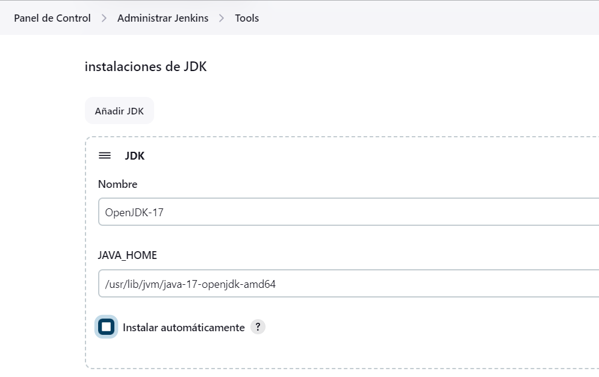
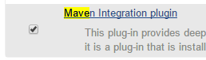
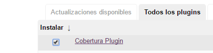
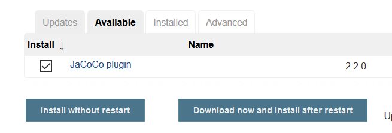
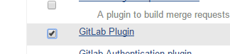
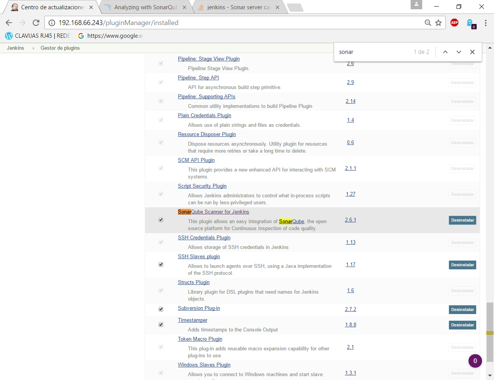
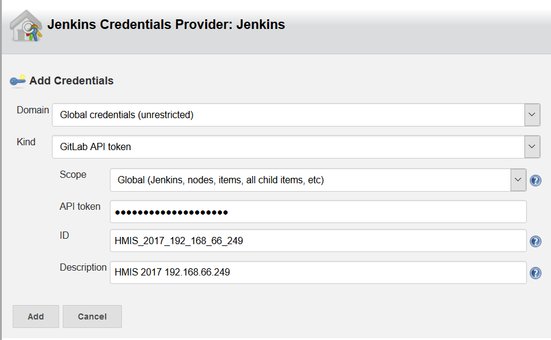

Joaquín Cañadas <jjcanada@ual.es>
Tutorial de instalación de Jenkins en Ubuntu 20.04, 18.04 LTS con Certbot SSL.
-
Actualizar el sistema Ubuntu 22.04, 20.04, 18.04 en caso de que sea necesario
-
Instalar Jenkins (última versión)
-
Configurar Nginx como proxy inverso
-
Instalar certificado SSL con Certbot
-
Primeros pasos en Jenkins: configuración básica y plugins
Prerrequisitos
1. Creación de una máquina virtual para Jenkins
Debes disponer de una máquina virtual en la nube para la instalación de Jenkins. Sigue los pasos que conoces para crear una máquina virtual.
2. Actualización del sistema
Actualiza los paquetes
sudo apt-get update -y
sudo apt-get upgrade -ySi aparece el mensaje *** System restart required ***
ejecutar
sudo reboot -h now3. Instalar Java
Puede instalar el JDK con el siguiente comando, es importante instalar al menos la versión 1.8 del JDK, si no Jenkins no funcionará. Aunque ya recomienda usar Java 17
sudo apt install openjdk-17-jdk -yPrimero comprobaremos si la versión activa de Java es la 17.
java -versionEn caso contrario podemos comprobar si hay varias instalaciones de Java en el servidor y elegir la pertinente:
sudo update-alternatives --config java3.1. Definiendo la Variable de Entorno JAVA_HOME
sudo nano /etc/environmentAl final de este archivo, agregue la siguiente línea, asegurándose de sustituir la ruta resaltada con la ruta de jdk en su sistema.
JAVA_HOME="/usr/lib/jvm/java-17-openjdk-amd64"Guarde, salga del archivo y vuelva a cargarlo.
source /etc/environmentAhora puede probar si la variable de entorno se ha establecido mediante la ejecución del siguiente comando:
echo $JAVA_HOMEEsto devolverá la ruta que acaba de establecer.
/usr/lib/jvm/java-17-openjdk-amd64
Instalación de Jenkins
4. Instalación de Jenkins mediante paquetes
Instalaremos Jenkins en un sistema operativo basado en Ubuntu 22.04 LTS, 20.04 LTS o 18.04 LTS. La instalación consiste en añadir los repositorios de Jenkins, actualizar nuestro sistema de repositorios y una vez acabado, instalar Jenkins.
| Como prerrequisito es necesario tener instalado Java. Compruebe que está configurado JAVA_HOME |
Instalaremos Jenkins de la rama estable (versión Long-Term Support, LTS). Hay que tener en cuenta que esta versión de Jenkins se actualiza cada 12 semanas. Si queréis más información sobre la versión LTS de Jenkins, os dejo el enlace aqui.
Lo primero que haremos es añadir los repositorios de Jenkins e instalarlo mediante apt-get:
sudo wget -O /usr/share/keyrings/jenkins-keyring.asc \
https://pkg.jenkins.io/debian-stable/jenkins.io-2023.keyecho deb [signed-by=/usr/share/keyrings/jenkins-keyring.asc] \
https://pkg.jenkins.io/debian-stable binary/ | sudo tee \
/etc/apt/sources.list.d/jenkins.list > /dev/nullActualiza e instala.
sudo apt-get update -ysudo apt-get install jenkins -y|
En caso de que no se pueda instalar Jenkins, revise si el comando ha sido actualizado en los pasos de instalación de Jenkins en Ubuntu. |
A continuación, comprueba el estado del servicio:
sudo systemctl status jenkinsEn caso de que no esté activo, levantamos el servicio:
sudo systemctl start jenkinsDebido a que systemctl no muestra un resultado de estado, utilizaremos el comando status para verificar que Jenkins se haya iniciado de forma correcta:
sudo systemctl status jenkinsSi todo salió bien, mostrará que el servicio está activo.
Y comprobamos también que Jenkins está funcionando en el puerto 8080
sudo netstat -plntuUna vez realizada la instalación por defecto Jenkins estará escuchando en el puerto 8080. Podemos comprobarlo:
curl localhost:8080Jenkins se está ejecutando en el puerto 8080. Necesitamos instalar un Apache o Nginx en modo Reverse Proxy para poder acceder a la administración de Jenkins mediante el puerto 80 (HTTP).
5. Instalación de Nginx como Proxy Inverso
Instalamos Nginx y lo configuramos para que actúe como proxy inverso: Nginx recibe las peticiones en el puerto 80 y las redirige al 8080 donde escucha Jenkins.
sudo apt install nginx -yComprobamos que Nginx está funcionando en el puerto 80: abre el navegador, introduce la dirección IP de tu máquina virtual y verás la página de bienvenida de Nginx.
Creamos un nuevo archivo de configuración para Jenkins, sustituyendo JENKINS.MACHINE.DNS por la DNS generada en AZURE de la máquina Jenkins:
sudo nano /etc/nginx/sites-available/JENKINS.MACHINE.DNSEl contendido debe ser el siguiente, sustituyendo el texto JENKINS.MACHINE.DNS por la DNS generada en AZURE de la máquina (sin http delante, solo el nombre de DNS):
server {
listen [::]:80;
listen 80;
server_name JENKINS.MACHINE.DNS; (1)
location / {
proxy_set_header Host $host:$server_port;
proxy_set_header X-Real-IP $remote_addr;
proxy_set_header X-Forwarded-For $proxy_add_x_forwarded_for;
proxy_set_header X-Forwarded-Proto $scheme;
proxy_pass http://127.0.0.1:8080;
proxy_read_timeout 90;
proxy_redirect http://127.0.0.1:8080 https://JENKINS.MACHINE.DNS; (2)
proxy_http_version 1.1;
proxy_request_buffering off;
add_header 'X-SSH-Endpoint' 'JENKINS.MACHINE.DNS:50022' always; (3)
}
}| 1 | Recuerda sustituir JENKINS.MACHINE.DNS por el DNS de la máquina virtual en Azure donde has instalado Jenkins. |
| 2 | Idem |
| 3 | Idem |
Se recomienda copiar el texto y editarlo en local con Notepad++ o cualquier otro editor, para hacer la búsqueda y reemplazo de JENKINS.MACHINE.DNS por el DNS de la máquina virtual. Tras ello, copia y pega el texto definitivo en el archivo abierto con nano en el terminal SSH.
|
Tenemos que configurar Nginx para que use el archivo de configuración que acabamos de crear, así que eliminamos la configuración predeterminada:
sudo rm -rf /etc/nginx/sites-available/defaultsudo rm -rf /etc/nginx/sites-enabled/defaultA continuación, creamos un enlace simbólico `default`a la nueva configuración de Nginx:
sudo ln -s /etc/nginx/sites-available/JENKINS.MACHINE.DNS /etc/nginx/sites-enabled/default
Recuerda sustituir JENKINS.MACHINE.DNS por el DNS de la máquina virtual en Azure.
|
Para que Jenkins trabaje con Nginx, necesitamos hacer que Jenkins escuche en localhost. Para ello, editamos el archivo /etc/default/jenkins
sudo nano /etc/default/jenkinsBusca la linea JENKINS_ARGS (última línea del archivo) y añade al final en la lista de argumentos --httpListenAddress=127.0.0.1.
La linea quedaría así:
JENKINS_ARGS="--webroot=/var/cache/$NAME/war --httpPort=$HTTP_PORT --httpListenAddress=127.0.0.1"Reiniciamos Jenkins
sudo systemctl restart jenkinsComprueba la configuración y reinicia Nginx:
sudo nginx -t
sudo service nginx restartY por último, comprobamos que los puertos 80 y 8080 están usados por Nginx y Jenkins, respectivamente.
netstat -plntu6. Instalación de Let’s Encrypt SSL (optativo)
Certbot by Let’s Encrypt proporciona certificados SSL gratuitos, permitiendo que cualquiera pueda usar HTTPS.
sudo apt-get install python3-certbot-nginx -yAhora que has instalado Certbot by Let’s Encrypt para Ubuntu, ejecuta el siguiente comando para recibir tus certificados:
sudo certbot --nginx certonlyIntroduce un correo electrónico y acepta los términos y condiciones (Y), no compartas tu email (N), luego recibirás la lista de dominios que necesita para generar el certificado SSL. Para seleccionar todos los dominios simplemente presiona Enter para dejar en blanco.
El cliente de Certbot generará automáticamente el nuevo certificado para tu dominio.

Ahora necesitamos actualizar la configuración de Nginx.
Una vez que se instala SSL, puede configurarlo en su archivo Nginx.
sudo nano /etc/nginx/sites-available/JENKINS.MACHINE.DNSBorra todo el contenido y añade el siguiente:
server {
listen [::]:80;
listen 80;
server_name JENKINS.MACHINE.DNS; (1)
return 301 https://JENKINS.MACHINE.DNS$request_uri; (1)
}
server {
listen [::]:443 ssl;
listen 443 ssl;
server_name JENKINS.MACHINE.DNS; (1)
ssl_certificate /etc/letsencrypt/live/JENKINS.MACHINE.DNS/fullchain.pem; (1)
ssl_certificate_key /etc/letsencrypt/live/JENKINS.MACHINE.DNS/privkey.pem; (1)
location / {
proxy_set_header Host $host:$server_port;
proxy_set_header X-Real-IP $remote_addr;
proxy_set_header X-Forwarded-For $proxy_add_x_forwarded_for;
proxy_set_header X-Forwarded-Proto $scheme;
proxy_pass http://127.0.0.1:8080;
proxy_read_timeout 90;
proxy_redirect http://127.0.0.1:8080 https://JENKINS.MACHINE.DNS; (1)
proxy_http_version 1.1;
proxy_request_buffering off;
add_header 'X-SSH-Endpoint' 'JENKINS.MACHINE.DNS:50022' always; (1)
}
}| 1 | Recuerda sustituir JENKINS.MACHINE.DNS por el DNS de la máquina virtual en Azure donde has instalado Jenkins. |
De nuevo, comprueba la configuración y reinicia Nginx para que los cambios tengan efecto:
sudo nginx -t
sudo service nginx restartY comprueba los puertos abiertos en tu máquina:
Y por último, comprobamos que los puertos 80 y 8080 están usados por Nginx y Jenkins, respectivamente.
sudo netstat -plntu
Renovación del certificado SSL
Los certificados que proporciona Let’s Encrypt son válidos solo por 90 días, por lo que deberás renovarlos al menos una vez durante el curso. A continuación, vamos a configurar un cronjob para verificar si el certificado vencerá en los próximos 30 días y renovarlo automáticamente.
sudo crontab -eAñade esta linea al final del archivo
0 0 1 * * certbot renew >/dev/null 2>&1Eso consigue que se renueve el certificado a las 0h del dia 1 de cada mes.
Eso es todo, ahora puedes visitar su nombre de dominio en el navegador web. Puedes ver la página de Jenkins con HTTPS.
Configuración de Jenkins 2
7. Primera configuración de Jenkins
Antes de realizar la primera configuración necesitaremos saber el password temporal de admin que Jenkins ha generado para poder empezar a configurarlo:
sudo cat /var/lib/jenkins/secrets/initialAdminPasswordCopiamos el password y lo pegamos en la siguiente pantalla, y hacemos click en Continuar
Seguidamente instalaremos los plugins más comunes. No os preocupéis que posteriormente instalaremos varios plugins más, de hecho una de las grandes ventajas que tiene Jenkins es la gran cantidad de plugins que hay.
Tras hacer clic en Install suggested plugins, el proceso de instalación de plugins tardará unos minutos:
Seguidamente nos solicitará un usuario y una contraseña de admin, el cual usaremos posteriormente poder acceder a la administración de Jenkins:
Pulsamos el botón Save and Finish
Ya podemos acceder a Jenkins introduciendo el usuario y contraseña que acabamos de crear.
8. Securizando Jenkins
Las versiones anteriores de Jenkins (v1.x) se instalaban sin ningún tipo de control de acceso para los usuarios. Esto implicaba que cualquier usuario podía usar la aplicación, lo que era totalmente desaconsejable. Por ello, lo primero era activar la seguridad. La versión actual (v2.x) activa la autenticación de forma predeterminada, creando un usuario Admin con el que hemos hecho el primer acceso. Pero sigue siendo necesario configurar la seguridad para poder gestionar el acceso a nuevos usuarios. Para ello, hacemos clic en Administrar Jenkins / Security.
Jenkins permite diversos modos de acceso. Vamos a configurar el más básico que es el de Usar base de datos de Jenkins, y marcamos Permitir que los usuarios se registren.
Justo abajo, en la sección Autorización, marcamos Configuración de seguridad. En el campo de texto debemos escribir el nombre del usuario admin con el que hemos accedido, y a continuación hacer clic en el botón Añadir. Tras ello, debemos marcarlo como Administer. Y por último Guardar
Administer|
Qué hacer si nos hemos bloqueado y no podemos acceder
En caso de emergencia, si olvidamos la contraseña o no podemos acceder a Jenkins, debemos seguir las instrucciones definidas aquí: Help! I locked myself out!. Disable Access Control. Más info en Securing Jenkins |
Podemos registrar nuevos usuarios mediante el formulario de registro de la página inicial (no estando logueados). Cada miembro del equipo debe registrarse como usuario. Mediante el usuario administrador damos permisos a los nuevos usuarios registrados.
|
Control de acceso con LDAP
El método de acceso más recomendable sería tener un sistema LDAP para el equipo, y que la validación de todas las herramientas (GitLab, Jenkins, etc) se realizase contra el LDAP (esto se podría implementar con, por ejemplo, OpenLDAP). Más info: |
9. Probando un primer proyecto
Desde la página inicial de Jenkins, clic en Nueva Tarea (Create new Job)
-
Nombre: prueba de sistema
-
Seleccionar: Crear un proyecto estilo libre
-
Ok
Entramos en la configuración del nuevo proyecto. Seleccionamos la sección Build steps
-
Seleccionamos el botón Añadir un nuevo paso
-
Seleccionamos Ejecutar línea de comandos (shell)
-
En comando escribimos
top -b -n 1 | head -n 5 -
Pulsamos Guardar
Tras ello hacemos clic en Construir ahora (Build now)
Tras la ejecución del proyecto, se puede ver el Historial de tareas, hacemos clic en la bolita azul de la primera ejecución y nos mostrará la Salida de Consola. Ahí podemos ver el resultado de la ejecución de este proyecto de prueba en Jenkins.
10. Configuración de herramientas
Jenkins hace uso de diversas herramientas a las que invoca a la hora de realizar tareas en la construcción de los proyectos. Estas herramientas deben ser instaladas y configuradas. Para ello vamos a Administrar Jenkins / Global Tools configuration
10.1. JDK
-
Añadir JDK
-
Nombre: OpenJDK-11
-
JAVA_HOME: /usr/lib/jvm/java-11-openjdk-amd64/

10.2. Git
-
Añadir Git
-
Nombre: Default
-
Path: git
|
Suponemos que git ya está instalado previamente en la máquina. En caso contrario instalarlo desde el terminal |
10.3. Ant
-
Instalaciones de Ant… / Añadir Ant
-
Nombre: ant 1.10.12
-
Marcar Instalar automáticamente
-
Version: 1.10.12
10.4. Maven
-
Instalaciones de Maven… / Añadir Maven
-
Nombre: maven default
-
Marcar Instalar automáticamente
-
Version: la última versión disponible
|
Seleccionamos la ultima versión de Maven disponible en el desplegable. (La 3.5.0 da muchos problemas!) |
|
En caso de que no esté disponible la configuración de instalaciones de Maven, este paso deberá hacerse una vez realizada la instalación del plugin de Maven. |
11. Instalación de plugins
La gestión de los plugins se realiza desde Administrar Jenkins / Administrar plugins.
En la pestaña Actualizaciones disponibles (Update) debemos marcar todos los que se muestren y mantenerlos actualizados.
La pestaña Todos los plugins (Available) muestra la lista de todos los plugins que no tenemos instalados. De ella tenemos que seleccionar los siguientes:
-
Maven integration plugin
 -
Cobertura plugin
 -
JaCoCo (Java Code Coverage)
 -
GitLab
 -
SonarQube

Tras ello, hacemos clic en Descargar ahora e instalar después de reiniciar. Y marcamos Reiniciar Jenkins después de la instalación
12. Configuración Adicional (opcional)
Opcionalmente, puede ser necesario realizar alguna configuración adicional. Por ejemplo si queremos construir aplicaciones PHP con Phing debemos instalar el plugin de Phing en Jenkins, así como instalar Phing en la máquina.
Recuerda que hay infinidad de plugins en Jenkins, y si quieres usar alguno de ellos solo tienes que instalarlo. Existe numerosa documentación de Jenkins en la web.
En caso de duda -→ Stackoverflow ;-)
| Las siguientes secciones pueden estar desactualizadas. Si los pasos no son exactamente iguales en la versión actual de Jenkins, busca en internet ayuda para realizar la configuración de GitLab y SonarQube indicada. |
12.1. Configuración de GitLab
Si queréis usar vuestro propio GitLab con Jenkins, tendréis que hacer una configuración de GitLab indicando la URL y el API Token. El API Token es un valor ligado al usuario de GitLab disponible en User Settings / Account:
A continuación, en Jenkins, introducimos la configuración del servidor Gitlab: Administrar Jenkins / Configurar sistema. Al final de la página encontrarás la sección de GitLab.
-
Nombre de la conexión: mi gitlab
-
Gitlab Host URL: http://mi_IP_gitlab
-
Credenciales: Añadir
-
Tipo: GitLab API token
-
API token: mi token
-
ID: mi-gitlab
-
Descripción: token de mi gitlab
Tras ello seleccionamos la credencial:
-
En un proximo tutorial veremos como usar un repositorio GitLab en un proyecto Jenkins.
12.2. Configuración de SonarQube
SonarQube es una plataforma de calidad de código fuente. SonarQube proporciona diversas herramientas de análisis estático de código fuente como Checkstyle, PMD o FindBugs para obtener métricas que pueden ayudar a mejorar la calidad del código de un programa.
Primero hemos de instalar el plugin de Sonar y luego configurarlo. * Instalación del plugin SonarQube Scanner for Jenkins
A continuación, Administrar Jenkins / Global Tool Configuration. Descender en la página a la sección de configuración SonarQube Scanner, y:
-
Hacer clic Añadir SonarQube Scanner
-
Seleccionar Instalar Automáticamente
-
Nombre: SonarQube scanner 3.x.x
-
Version: la última disponible

Se debe crear un token de autenticación desde el servidor SonarQube, creado como una credencial 'Secret Text'. Si aun no dispone de un servidor SonarQube, déjelo en blanco.
Por último guardar la configuración.
Más info: SonarQube Scanner for Jenkins
13. Actualización
13.1. Actualización de Jenkins
Si al iniciar Jenkins como administradores nos aparece un mensaje indicando que una nueva versión de Jenkins está disponible, es aconsejable actualizar siempre.
Para ello:
-
Administrar Jenkins / Prepare for Shutdown
-
Desde la consola ssh:
sudo apt-get update -y sudo apt-get upgrade -y
13.2. Actualización de plugins
El enlace para gestionar los plugins nos muestra si hay actualizaciones disponibles. Es recomendable actualizar siempre:
Entramos y marcamos todos con All , y hacemos clic en Descargar ahora e instalar después de reiniciar
Tras ello, marcamos Reiniciar Jenkins…